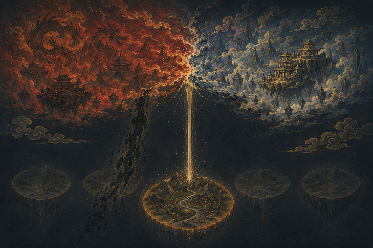
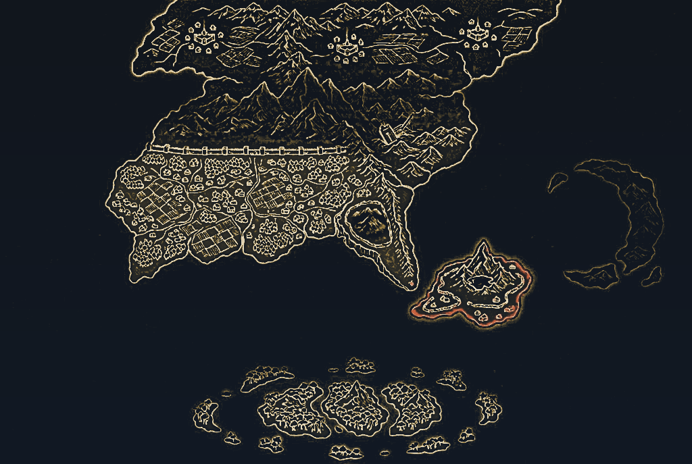
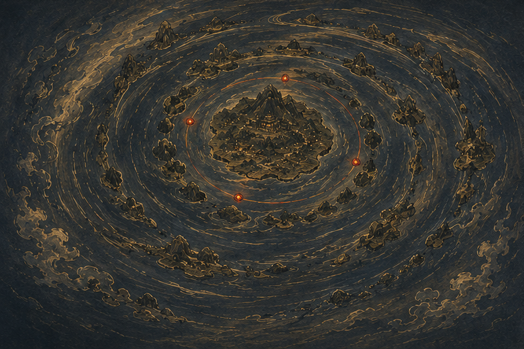
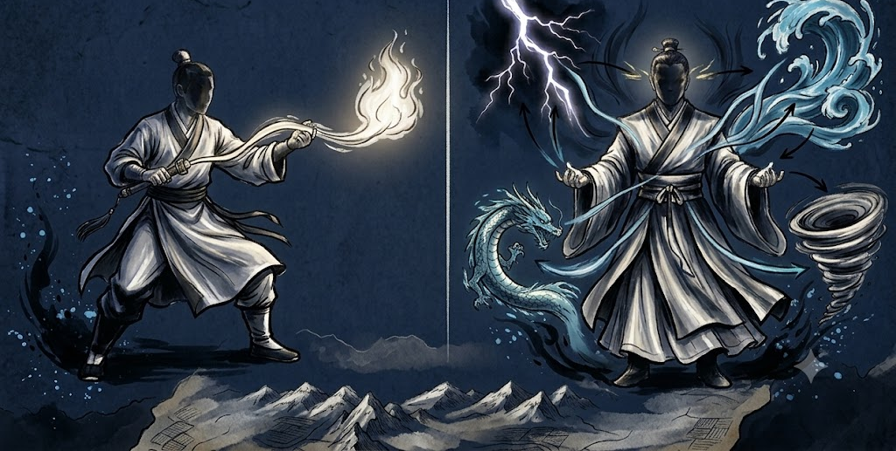
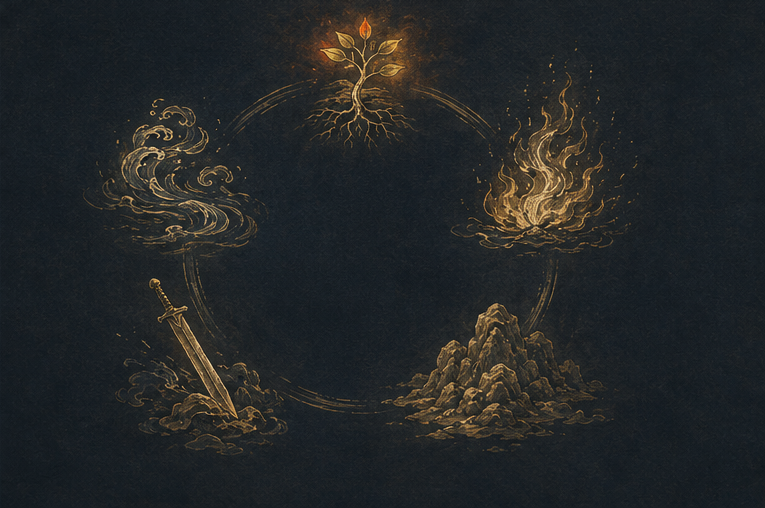

멸귀수도전의 세계
인계(人界)는 세 대륙과 하나의 대양으로 이루어진 땅이다.
사람, 요귀, 도깨비는 같은 영기,요기 (무협지의 내공)를 쌓으며 수행하며 강해진다.
세계관 내에서 이들을 "수사"라고 부른다.
경지가 오르면 수명이 늘고, 강한 힘을 얻으며 오감을 포함한 여러 능력이 대폭 상승한다.
최종적으로 인간의 범주를 벗어나기 때문에,
하늘이 정해 둔 수명과 격을 거슬러 올리는 일이라 수행의 길을 역천(逆天)의 길이라고 한다.
결국 수도(修道)란 그 역천의 길을 끝까지 걸어 하계를 벗어나고 상계로의 자격을 위한 과정이다.
세계와 종족
층은 상계와 하계로 나뉘고, 여러개의 하계 중 인간, 요귀, 도깨비 들이 살고 있는 인계가 있다.
수사와 요귀와 축귀
수사는 수행을 통해 경지를 높이고,요귀는 대상을 포식하여 경지를 높인다.
요귀는 인간을 잡아 먹기 때문에 그런 요귀를 잡는 일을 축귀 라고 한다.
수사 修士 · 영기를 쌓아 경지를 오르는 자. 본문에서는 수도자라고도 부른다.
요귀 妖鬼 · 요기를 힘으로 사용하는 존재. 깨달음이나 수행이 아니라 포식을 통해 경지를 오른다.
(마인이라고 부르는 자들 또한, 사람이지만 영기 대신 요기를 힘의 원천으로 사용하기도 한다.)
축귀 逐鬼 · 요귀를 쫓는 일. 잡는 데서 끝나지 않고 원념을 정화하고 균형을 지키는 데까지 간다
(→ 01-8 제령과 위령).
두개의 층
층은 상계와 하계 둘뿐이다.
하계는 상계에 대비되는 아래층 전체를 부르는 말이고, 인계는 그 하계 가운데 이 세계 하나의 이름이다.
상계는 요마계와 천변계로 갈려 억겁의 시간 동안 싸우고 있다.
인계에는 보통 화신경이 없고(화신경이 되면 등선해서 상계로 넘어가기 때문),
대륙마다 「돌파를 앞둔 원영경」이 하나씩 있을 뿐이다. (사실상 원영경이 세계관 최고 경지이다.)
인계 人界 · 여러 하계 가운데 이 세계 하나의 이름. 세 대륙과 하나의 대양으로 이루어져 있다.

세 대륙과 하나의 대양
땅은 북대륙과 동대륙, 그리고 남쪽 바다의 제도로 나뉜다.
작중 북대륙과 동대륙 외에 지역도 있으나 상세히 밝혀진 것은 없다.
그 사이를 대양이 가른다.
대륙 사이를 오가는 것은 아무나 못 한다. 바다에 엄청난 경지의 요수들이 지키고 있기 때문에 비행으로 넘어야 하기 때문이다..

북대륙 · 천빙궁 천요대산 · 요왕의 영역 별천 만리대장벽 대무도 본산 정 제국 · 삼대문파와 칠대세가 월국 · 이면귀 항신반도 · 대무도의 거점 한라 · 도귀족 대양 · 수룡족 남대륙 제도움직이는 땅
제도의 섬들은 움직이는 이이한 판 위에 얹혀 있고, 그 판이 이백에서 삼백 년에 한 바퀴 돈다.
(일본열도를 모티브로 한게 아닐까 합리적 추측이 있다)
이 섬에선 절대 좌표를 쓸 수 없어서「어느 섬의 북쪽 얼마」라는 상대 위치로 길을 찾아야 한다.
절대 위치를 아는 것은 대양의 요수뿐이고, 위치 정보들 바탕으로 백 년마다 정확히 같은 자리를 습격한다.
「땅은 일종의 껍데기입니다. 그 안에는 엄청난 고온의 물질을 담고 있지요. 실제로 흐르는 것은 그 물질이고 땅은 그 흐름에 따라 움직이는 것입니다.」
「제도의 판은 약 이백 년에서 삼백 년에 한 번씩 한 바퀴 돌고 있습니다. 즉, 그 기간에 모든 섬은 원을 그리며 한 바퀴 돌아 제자리로 돌아옵니다.」

인족
사람은 영근을 타고나야 수도자가 된며, 타고나지 못한 이는 범인으로 산다.
문파에 들면 제자가 되어 수행하고, 세력이나 문파 없이 떠돌아 다니는 수도자를 산수라 부른다.
특이하게도 제령을 할 수 있는 종족은 사람뿐이다. (도깨비인 도귀는 할 수 없다.)
영근은 하늘이 준 것이라 선천적 능력이다. 예외적으로대무도가 신수의 힘을 빌려 후천적으로 영근을 만들어 주기도 한다. 그래서 오직 대무도의 시험에는 범인도 지원할 수 있다.
산수는 문파가 있는 수도자에 비해 경지가 낮고 비루한 삶을 사는 경우가 많다.
임무를 받을 곳도 물자를 댈 곳도 없어서 사냥한 것을 그때그때 팔아 살아가기 때문.
방시가 큰 도회지에 산수가 몰리는 이유다.
범인이라고 이 세계와 무관하지는 않다. 요귀가 나타나면 가장 먼저 죽는 쪽이긴 하지만
조정과 왕실도 존재한다.
높은 관리직이나, 심지어 왕이라도 일정 경지 이상의 수도자를 두려워하며 존대한다.
산수 散修 · 문파에 속하지 않고 홀로 수행하는 수도자
범인 凡人 · 영근이 없어 수도자가 되지 못하는 사람
도귀족
사람들이 도깨비라 부르는 종족이으로 회백색 피부에 뿔이 곱게 돋아 있다.
어떠한 이유에선지 과거 인간과 동맹이 되어 축귀를 함께해 온 이웃이자 동맹이다,
반도삼국 일부에서만 차별이 있다.
인간보다 기본적으로 체력과 근력이 강하며 종족 고유의 비기가 있고, 영기가 아닌 요기를 사용한다.
도귀영수마공이라는 일족의 기술을 사용하고, 그 안에 세부 기술들이 따로 있다. 씨름을 즐겨서 축제가 열리면 마당마다 내기 씨름판이 벌어진다. 손끝에서 피어오르는 푸른 불꽃은 물로도 끌 수 없는 도깨비들의 비기 중 하나다.
도귀족 徒鬼族 · 뿔이 돋은 종족. 사람들은 도깨비라 부른다
유각 乳角 · 성인이 되기 전 한 번 떨어지는 작은 뿔. 연인이나 특별한 이에게 건넨다
「도귀족은 두 번 일어선 힘을 가진 해학의 종족이다.」
도깨비의 이름과 사회
도깨비는 첫 생일에 일곱 글자를 새긴 돌 가운데 처음 집은 것을 성으로 삼는다.
사람의 돌잡이를 흉내 낸 풍습이다. 실제로 성이 쓰여 있는 돌을 고르는 형태로 돌잡이를 잘못 이해해서 생긴 작명으로 추측한다.
일족의 수가 적어서 한 다리만 건너면 대개 가족이다.
아이가 귀해서 번식기라는 풍습까지 만들어 출산을 장려할 정도다. 경지가 높은 도깨비는 대개 가족을 이루지 않는데, 높은 곳을 보고 수양하는 이들이 지킬 것을 늘리고 싶지 않기 때문이다.
경어도 인간 사회와 기준이 다른데, 수도자는 경지를 보고 말을 높이거나 놓지만 도깨비는 나이와 직책을 우선으로 한다.
제령과 위령
누군가 살해당하면(요귀든 도귀는 인간이든) 사체에 원념이 한동안 남는다. 그 원념은 반드시 정화해야 하는데 이 행위를 제령이라고 한다.제령하지 않으면 원념이 구천을 떠돌다 서로 모여 강한 요귀를 다시 만든다.
결국 제령은 이 세계관의 평화를 지키기 위해 필수로 진행해야한다.
다만, 죽은 대상이 적이냐 아군이냐에 따라 위령, 제령 중 선택하여 진행한다.
제령 除靈 · 요귀의 원념을 정화해 다시 생기지 못하게 하는 의식
위령 慰靈 · 죽은 아군의 넋을 달래는 의식
제령은 사람만 할 수 있다.
도깨비가 아무리 강해도 이 의식은 못 한다. 두 종족이 오래 붙어 지낸 근본 이유가 여기에 있다.
보통 제령은 무당이 하는데, 워낙 필수적인 행위인지라 특수한 법기를 통해 영기가 없는 범인도 다룰 수 있게 만들어져 있다. 요귀를 잡는 일은 수도자가 하지만 뒤처리는 마을 사람도 거들 수 있는 구조이다.
「요귀는 사냥했다고 끝이 아니다. 요귀의 사체에는 한동안 놈들의 원념이 남는다.」
요귀와 마인
요귀가 되는 길은 둘이다. 신수나 신선이 되려다 도리를 잃고 요기에 물드는 쪽, 그리고 죽어서 한이 남아 원귀가 되는 쪽. 밤이 되면 요기가 짙어지며 위령이나 제령을 받지 못한 생명이 많이 죽을수록 요귀가 늘어난다.
전쟁과 살육으로 죽은 자리에 원념이 남고 그 원념이 요기를 불린다. 학살은 특히 위험한데, 한꺼번에 많이 죽이면 거대한 악령이 만들어질 수 있기 때문이다.
요귀도 말을 할 수 있는 지능이 있지만 축기경은 되어야 한다.
이성이 생기면 결계를 다루고 제 요기를 감출 줄도 안다. 그전까지는 짐승에 가깝다.
마인
수도자가 심마겁을 이기지 못하고 타락하면 마인이 되는데, 엄연히 수사와 같은 경지가 있는 세계관 강자 계열이다. 이런 마인들만 모여서 이룬 세력 중 하나가 "마도 종문"이다.
마인과 정도 수도자를 가르는 결정적인 차이는 힘의 종류가 아니라 천기다. 마인은 천기를 읽지 못한다.
마인은 어깨에 색천을 두른다. 검정은 살인, 빨강은 흡혈, 파랑은 약탈, 노랑은 흡정이다. 무슨 짓을 벌일지 색만 봐도 짐작할 수 있는 경고판으로 쓰인다(자기들 끼리 조심하기 위한 예방책). 마도종문은 사람을 붙잡아 두는 방식도 달라서 금제와 계약을 여러 겹으로 걸고, 자폭 단약을 다른 약에 섞어 몰래 먹여 두기도 한다.
이면귀
도깨비와 닮았다. 뿔이 있고 몸집이 크고 손발톱이 날카로워서 범인들은 둘을 구분하지 못한다. 그러나 성정과 뿔의 모양이 다르다. 평소에는 변신술로 아름다운 사람의 얼굴을 뒤집어쓰고 다닌다가 방심한 상대를 포식한다.
어둠에 들면 요기도 기척도 새어 나오지 않아 추적이 거의 불가능하다. 사냥한 사람의 얼굴을 쓰고 나타나 지인 행세를 하는 수법 때문에 피해가 컸다. 힘은 도귀족에 비길 만큼 강하지만 요법이라 할 재주는 거의 없다. 햇빛 아래를 다니지 못해 평소에는 월국에 갇혀 있고, 낮이 사라지는 때가 오면 반도삼국으로 쏟아져 나온다.
전원에게 금제가 걸려 있어서 강제로 정보를 캐려고 하면 심장이 터져 죽는데, 은을 통해 금제를 무력화할 수 있다.
근거 203~206화. 금쇄봉은 지난 전쟁에서 도깨비에게 빼앗은 것이다.
영물과 영수와 신수
영성을 얻고도 도를 잃지 않은 동식물을 영물과 영수라고 부른다.
그 위에 신수가 있는데, 신수는 따로 있는 종이 아니라 화신경 영수가 떼어 놓은 분령이다.
간혹 수도자가 영수를 소유하는 경우도 있는데, 영수가 주인을 따르는 것은 충성이라기보다 각인에 가깝다.
영물은 씨앗에서 발아하듯 자라기도 한다. 대무도가 영수 사냥을 금지하는 이유는 그 존재만으로 수양에 좋은 환경이 만들어지기 때문이다.
균형
요기를 세상에서 완벽히 없앨 수는 없다. 요귀 박멸이 아닌 두 기운의 균형이 이 세계의 원칙이다.
영수와 영초(영기가 있는 동물이나 식물)는 광합성을 하듯 요기를 정화하고 대신 영기를 배출한다.
조화가 서면 요귀가 자연적으로 생기지 않는다.(생겨도 감당할 만한 수준).
영수를 사냥하지 않고 영초를 보존하는 일도 중요한 일이다. (특히 대무도에서는 더 각별하게 생각한다)
이 원칙을 국가 정책으로 옮긴 사례도 있다 (→ 09-2 정 제국).
괴력난신과 분령현현
인계에서 괴력난신이라 불린 넷이 있다. 제강, 불가살, 어둑시니, 공명도다. 이해의 범주를 벗어난 존재로 애초에 이 세계의 존재가 아니기 때문이다.
상계의 존재가 영혼 일부를 떼어 하계로 내려보내는 일을 분령현현이라 부른다. 비승하는 것만큼 부담이 크지만 가능하다. 내려온 조각은 경지 대부분을 잃은 상태라 모습을 드러낸 순간부터 살아남기 어렵다. 분령이 죽으면 상계의 본령도 대경계 하나쯤 경지가 떨어지고, 분령이 본령과 합쳐지지 못하면 그 기억도 함께 사라진다. 왜 내려오는지는 아직 밝혀지지 않았다.
힘의 체계
타고난 영근에서 시작해 다섯 경지를 오른다
두 기운
이 세계의 기운은 영기(양)와 요(음)이 존재한다. 빛이 있는 곳에 그림자가 지듯 둘은 한 공간에 함께 흐른다.
영기 靈氣 · 양의 기운. 수도자가 쌓고 다루는 힘의 원천
요기 妖氣 · 음의 기운. 타락한 존재가 두르고, 짙어지면 요귀를 부른다
일반적으로 수도자는 영기를 쌓고 요귀와 도귀는 요기를 쌓는다.
수도자는 수행을 통해 영기를 쌓으며 깨달음으로 한 단계씩 밟아나가고, 요귀는 대상을 포식하고 영기를 흡수하여 자신의 요귀를 늘린다.
특이하게도 주인공이 성장하는 대무도의 수행방식은 그 뼈대가 요귀의 포식과 같다.
적의 기운을 빨아들여 제 것으로 만드는 방식이다. 다만, 빨아들인 요기를 정화해 영기로 바꿔서 흡수한다 (수율이 엄청 뛰어난 편은 아니다)
영기와 영근
수도자가 되려면 영근을 타고나야 한다. 영기가 도는 영맥과 그 속성과 품질과 규모를 통틀어 이르는 말이다. 속성은 오행에서 오고 하나부터 다섯까지 붙는다. 무엇을 타고났느냐에 따라 익힐 수 있는 법술이 갈린다.
영기 靈氣 · 천지에 흐르는 기운. 수도자가 쌓고 다루는 힘의 원천.
영근 靈根 · 영기가 도는 영맥과 그 속성·품질·규모를 통틀어 이르는 말. 선천적이라 만들 수 없다.
연근의 개수에 따라 성장 속도와 전투 방식이 다르다. 영근의 수가 적으면 수련이 빠른 대신 전투가 단조로워진다. 많으면 쓸 수 있는 갈래가 넓어지지만 느려진다. 대기만성을 꿈꿀 때 이러한 이유로 속성이 적을수록 귀하다고 여긴다.
일영근(영근이 하나인 사람)자는 한계가 축기 원만단계에서 나타난다. 원기(강한 에너지)를 만들려면 두 속성 이상이 서로 밀어내고 잡아먹는 과정을 거쳐야 하기 때문에 일영근자는 그 이후 경지로 갈 수 없다.
영근은 선천적인 것이여서 만들 수 없고 품질도 바꿀 수 없다.
다섯 경지
수선의 경지는 다섯이다. 연기에서 시작해 축기, 결단, 원영을 거쳐 화신에 이른다.
수도자 대부분은 첫 칸인 연기경에서 생을 마치며 결단경만 되어도 인계에서는 「고수」다.
경지는 사람만의 것이 아니고, 요귀, 영수, 영초에게도 같은 경지가 적용된다.
연기경 열 성
연기경만 열 성으로 잘게 나뉜다(대부분의 수사들이 머무는 단계인 만큼 세분화가 잘 되어 있다).
1성에서 4성까지는 영기를 느끼고 몸 밖으로 꺼내는 법을 익히는 구간이다.
5성이 첫 벽이다. 이 단계 부터 영기를 「법력」구현하여 사용할 수 있다.
하지만 대부분 5성을 달성하지 못한 채 수명을 다한다.
축기경 네 단계
축기경부터는 경지가 열 성이 아니라 네 단계다. 초기, 중기, 후기, 원만으로 나뉜다.
축기경 정도만 되어도 범인이나, 연기경 수도자들이 벌벌 떠는 정도의 엄청난 강자 반열이다.
신식이라는 오감외 특수한 감각이 추가되는데, 경지가 높을 수록 신식의 범위나 밀도가 높아진다. (신식의 범위로 몇백리 밖에서 일어나는 일을 감지할 수도 있다.)
근거 123화. 중기의 구결은 「여약규혼 혼역시여」, 네가 영혼을 들여다보면 영혼 또한 너를 본다.
경지의 분포
집단의 경지 분포는 삼각형을 이룬다. 작중에서는 이것을 일종의 자연법칙이라 부른다.
결단경의 수는 축기 인원의 한두 푼이다. 사람의 문파에도 요수 무리에도 똑같이 적용된다.
위로 갈수록 급격히 줄어든다. 원영경은 전 대륙을 합쳐 서른쯤이고 그 위에서 화신을 앞둔 자는 여섯뿐이다.
아이러니 하게도 누군가 화신경으로 비승해버리면 세력 자체의 힘이 많이 떨어진다. 원영경은 대수사는 사실상 비대칭 전력인데, 그 전력이 하루 아침에 사라져버리는 형상이기 때문.
근거 174화. 두 세력 모두 전쟁으로 크게 줄어든 뒤의 수치다.
요귀가 오르는 법과 등급
요귀는 먹어서 요기를 쌓고 그것을 압축해 몸 안에 핵을 만든다. 이 핵을 요단이라 부르는데,요단은 영체가 아니라 실체라서 남이 몸을 갈라 빼 갈 수 있고, 어디에 자리 잡느냐가 중요해진다.
요단 妖丹 · 요귀가 요기를 압축해 만든 핵. 결단경에서 금단으로 바뀐다
사람과 마찬가지로 연기경 요귀에만 급수를 매긴다. 아홉 급에서 한 급까지인데, 이는 연기경 수사들의 생존률을 의미한다. 9급은 10명중 9명이 살아오는 난이도, 1급은 10명 중 1명이 살아돌아오는 난이도를 뜻한다. 저위 수도자의 생존률을 높이기 위해 특별히 만들어졌다.
같은 종이라도 축기경으로 올라서면 그때부터는 개체마다 다르기 때문에 축기 이상의 요귀는 사실상 모두 미지의 적으로 취급한다.
수행과 기예
힘을 얻는 길은 셋이고, 쓰는 재주는 넷이다
영기를 쌓는 세 가지 길
영기를 몸에 들이는 방법은 세 가지뿐이다. 명상, 영단, 그리고 사냥이다. 셋 중 무엇을 주 방식으로 삼는지에 따라 그 수도자가 어느 문파 사람인지를 거의 알 수 있다.
대무도는 세 번째를 주 방식으로,요귀를 잡아 그 기운을 정화해 쌓는 것이 문파의 근간이다.
명상은 천지에 흐르는 영기를 몸으로 천천히 받아들이는 길이다. 정석이지만 느리다. 영단은 빠르다.다만 구하기가 어렵고 값이 계속 오른다. 축귀제령공법은 단약으로 쉽게 경지를 올릴수 있는 방법인데, 한계점으로 몸에 단독이 쌓이고, 그만큼 경지를 오를 때 받는 천겁이 거세진다. 세 번째가 사냥이다. 대무도의 입문제자들이 위험을 무릅쓰고 속세로 나가는 이유가 여기에 있다.
문파의 근간이 되는 공법은 세 줄로 요약된다. 신체를 단련하고, 요귀를 사냥해 정화한 영기를 그 신체에 쌓고, 쌓은 영기에 깨달음을 더해 다음 경지로 나아간다. 순서가 이렇게 정해져 있어서 연기경에서는 「먼저 쌓고 나중에 깨닫는다」는 논리로 대부분 수련한다.
법술과 공법
법술은 한마디로 마법과 같은 개념으로, 체내 영기나 요기를 사용하는 기술이다.
연기경 수도자는 한 번에 한 개의 법술만 사용할 수 있다(사람이 두 권의 책을 동시에 읽지 못하는 것과 같다). 그렇기 때문에 실전에서는 법술과 법술 사이의 약점을 일회용 법기로 메운다.
축기경부터는 신식이 열리면 그 한계가 풀린다(의식을 나누어 여러 갈래를 동시에 부린다)
경지 격차의 실체가 여기에 있다. 저위는 하나씩 쓰고 고위는 겹쳐 쓴다. 같은 법술을 알고 있어도 몇 개를 동시에 얹느냐에서 승부가 갈린다. 신식은 뇌를 영뇌로 다시 빚어 여는 감각이라 인지가 넓어지는 데서 그치지 않고 의식 자체가 나뉜다. 결단경에 이르면 읽은 것을 잊지 않고, 머릿속에서 법술을 미리 겨루어 볼 수도있다.
영기 靈氣 · 천지에 흐르는 기운. 수도자가 쌓고 다루는 힘의 원천
신식 神識 · 축기경부터 열리는 감각. 인지를 넓히고 의식을 나눈다

수선 사예 — 연단·제기·제부·포진
법술을 제외하고도 약을 짓고, 그릇을 만들고, 부적을 그리고, 진을 치는 기술을 배운다. 이 넷을 수선 사예라 부르며 보통 한 갈래만 깊이 배운다.
연단은 영초를 배합해 단약을 짓는 일
제기는 법기를 벼리는 대장장이의 일
제부는 부적을 그리는 그림쟁이의 일이다
포진은 진법을 까는 일인데 불을 놓는 방화진부터 사람을 묶는 구속진, 눈을 속이는 환상진까지 갈래가 넓다.
모든 기예가 중요하지만, 특히 실력 좋은 연단사는 문파 전체의 성장 속도를 바꿀 정도의 파급력을 가진다.
대무도의 네 지망 — 낭전·의생·무당·암사
대무도에만 있는 개념이다. 입문한 제자는 네 갈래 가운데 하나를 고른다(게임에서의 클래스 혹은 직업과 비슷). 무기로 싸울지, 약을 지을지, 주술을 다룰지, 거점을 뚫고 막을지를 정하는 일이다.
갈래마다 공법서가 모두 다르게 존재해서 배우는 방식도 다르다.
보통 임무는 이 4개의 지망을 섞어 편성한다.
낭전은 무기술로 요귀를 제압한다.
의생은 의술과 단약과 독약을 맡는다.
무당은 주술과 법기와 부적을 다루고,
암사는 주적술과 은신술에 기관과 진법과 토목을 더해 거점을 뚫거나 지키는 데 특화된다.
악령을 치는 임무는 무당 지망이 반드시 끼어야 수행할 수 있다.
낭전과 무당과 의생 셋이 한 조를 이루는 편성이 훈련원의 기본형이다.
천기를 읽는 법
하늘의 뜻을 읽는 방법으로는 별을 보고, 기운을 보고, 점을 치고, 시공간을 읽는 4가지 방법이 있다.
원영경으로 가려는 자가 반드시 넘어야 하는 것은 그중 별을 보는 것(관천)이다.
말그대로 천기 이기 때문에 수명, 미래에 관한 것을 함부로 발설하면 그 값을 치른다.
하늘을 나누는 기준은 이십팔수다. 동서남북의 하늘을 일곱 구역씩 스물여덟으로 나눈 별의 경계이고 동방 청룡, 북방 현무, 서방 백호, 남방 주작으로 갈린다. 대무도의 당 이름이 여기서 나왔다.
근거 201화. 관천에 쓰는 단약으로 관천단이 있고 값은 영석 이천 개다.
역천의 대가
모든 수도자들은 일정 경지에 도전할 때 하늘의 벌을 받는다.
왜 대가를 치뤄야 할까
수도는 하늘이 정해 둔 것을 거스르는 일이다. 수명도 격도 원래 정해져 있는데 그것을 사람이 수행을 통해 밀어 올리며 비승을 꿈꾼다.
그렇기에 수도의 길을 역천의 길 이라고 부른다.
값은 "겁" 이라는 개념으로 쌓여서 훗날 결단경을 돌파할 때 한번에 받는다.
요기를 다루었거나 도리를 어긴 대가로 내려온다.
크기는 정해져 있지 않으나 걸어 올라온 길이 도리에서 얼마나 어긋났는지에 따라 달라진다(그래서 선업을 쌓고, 대학살을 지양하기도 한다. 겁이 쌓이니까).
덧붙일 것이 하나 있다. 수선은 목표가 아니다. 과정의 결과다. 작중 인물들이 자기가 하는 일을 수선이 아니라 수도라고 부르는 이유가 그것이다.
「수선은 곧 역천의 길. 갈림길 앞에서 도리를 잃고 쉬운 길만 찾아가면 거대한 천겁을 피할 수 없다.」
2막
악업과 선업
악업은 전쟁과 살육으로 쌓인다. 쌓인 만큼 세계의 요기가 늘고 요귀가 생긴다.
선업은 정당한 값을 받고 건넨 것이 남을 이롭게 한 순간에 쌓인다.
선업의 정의가 특이한데 적선은 선업으로 치지 않는다. 거래가 성립한 뒤에 그것이 남에게 이로웠는지를 본다. 그래서 옳은 방식으로 장사를 오래 한 사람이 선업을 두텁게 쌓기도 한다.
심마겁과 천겁
시련은 경지마다 다르다.
연기에서 축기로 넘어갈 때 : 심마겁
결단 이후 : 천겁
심마겁은 마음의 시련이다. 영뇌가 새로 열리며 신식이 처음 바깥과 닿는 그 짧은 순간에 가장 깊은 곳의 심마가 올라온다. 다스리지 못하면 그 자리에서 도심이 무너지고 마인이 된다.
심마겁은 돌파할 때만 오는 것이 아니다. 조급함에 마음을 잡아먹히면 언제든 찾아온다. 마인이 되는 길이 셋인데 그중 하나가 이것이다. 나머지 둘은 경지의 벽과 욕망이다.
근거 13막. 마인이 되는 길은 셋이고 심마겁이 그중 하나다.
천겁 일곱
결단으로 넘어가는 천겁은 일곱 단계로 물리적이다.
뇌겁으로 시작해 오행겁 다섯을 거쳐 영겁으로 끝난다.
절대 막을 수 없으며, 무엇으로 막든 부수고 떨어지고, 피하려 들면 더 세진다.
진행 중에는 내기를 쓸 수도 없다.
자신이 수행한 기간에 쌓인 겁에 따라 강도가 결정되는데, 이 규칙이 통하지 않는 체질이 하나 있다.
천요양맥체(영기와 요기를 모두 쌓을 수 있는 신체)는 쌓은 업과 무관하게 최대치를 맞는다.
정도를 걸어온 보통의 대수사는 천뢰를 네다섯 번 맞고 끝나는데 이 체질은 일곱 번을 꽉 채워서 맞는다.
세력과 제도
요귀를 잡는 일을 업으로 삼은 문파들이 여럿 존재한다.
대무도
동대륙의 축귀를 맡은 주요 문파다. 도주 아래 총사가 있고 그 아래 열한 개의 당이 선다.
당의 이름은 하늘의 별자리에서 왔다. 청룡, 백호, 주작, 현무는 이십팔수의 네 방위다.
당주는 결단경 대수사만 오를 수 있고, 위신은 직책이 아니라 경지가 만든다.
대무도의 계율과 윤리
문파의 규범은 힘을 어디에 쓰지 않을 것인가로 짜여 있다.
1. 제자끼리 죽이지 않고 영근을 부수지 않는다.
2. 영수를 사냥하지 않고 영물을 함부로 훼손하지 않는다.
3. 사냥터에서 남의 몫을 가로채지 않는다.
영근을 부수는 일은 살인과 같은 무게로 다룬다. 영근이 사라지면 수도자로서는 죽은 것과 다름없기 때문이다. 호칭에도 규칙이 있어서 자기보다 경지가 높으면 선배님이라 부르고 같은 경지끼리는 도우 또는 수사라 부른다. 후배를 지도하면서 사사로이 무언가를 챙기는 일은 엄격히 금하고, 받을 수 있는 것은 밥 한 끼 정도다.
근거 대무도 기본백서 · 146·157·181화.
입문시험
사 년에 한 번 열리고, 열여섯에서 열아홉 사이에 일생 단 한 번만 응시할 수 있다. 영물이든 이종족이든 다른 문파 사람이든 범인이든 문을 두드릴 수 있다. 수십만이 지원해 천 명 남짓이 남고, 최종으로 오백 명이 들어간다.
영귀당
도귀족의 수장(몽련)이 당주인 당이다.
삼백 년 전, 두 종족이 서로를 이해하고 함께하기로 했다.
그 자리에 있던 이들 가운데 지금도 살아 있는 사람이 있다.
전쟁 때. 대무도가 도귀족의 마을을 외면하여 도깨비의 절이 습격을 받았고 그 일을 겪은 뒤 일족이 문파를 나갔다. 열한 개 당 가운데 하나가 그렇게 비었다.
한참 뒤, 대무도가 물자를 대고 도깨비가 문파로 복귀하는 조건으로 다시 문파에 합류했다.
일족 안에서는 반발하는 이들도 있었으나 수장 대행의 말 한마디에 정리되었다.
빈 당이 모두 채워져 십일내당이라는 이름이 다시 유지되고 있다.
「영귀당은 과거부터 삼백 년, 미래로 천 년간 이어져야 할 인간과 도귀의 약속이자 증표다.」
다른 세력들
대무도만 있는 것은 아니며, 대륙마다 정점이 서 있고 성향이 저마다 다르다. 비승만 바라보는 문파가 있고, 자원으로 사람을 찍어 내는 제국이 있다. 정도와 마도의 구분은 힘의 종류가 아니라 천기를 읽을 수 있느냐에서 갈린다.
마인은 천기를 읽지 못한다. 그래서 마도종문은 정도 문파와 근본이 다른 방식으로 굴러간다. 사람을 묶어 두는 방법도 달라서 금제와 계약과 약점을 이중삼중으로 걸어 목숨줄을 쥔다.
사물과 경제
범인들과 다른 화폐를 사용한다.
영석
수도자의 돈은 영석이라는 귀한 광석이다. 영석은 화폐이면서 동시에 영기를 갖고 있는 재료라 갈아서 단약에 넣기도 한다.
대략 하급 영석 100개가 중급 영석 1개와 같다.
법기와 법물
수도자가 쓰는 물건을 통틀어 법기와 법물이라 부른다.
일회용이 있고 다회용이 있으며, 그 위에 귀보라 불리는 급이 따로 있다.
근거 6막·192·200·202·205화. 은은 이면귀의 금제를 무력화한다.
본명법보
경지가 결단에 이르면 자기 영혼에 묶인 무기를 하나 만드는데, 이것을 본명법보라고 한다.
값은 영석 이백만에서 삼백만 개, 기간은 최소 삼 년이다.
본명법보를 가진 결단경 수사는 그 자체로 문파의 자산으로 취급된다.
본명법보는 소유물이라기보다 몸의 일부에 가까우며, 주인과 같이 성장한다.
단약과 단독
단약을 흡수하면 빠르게 영기를 얻을 수 있지만 단독이라는 대가가 있다. 그리고 많이 먹을 수록 점점 효과도 떨어진다. 쌓인 단독은 법술 전개를 방해하고 천겁의 강도를 키운다.
시장과 계약
수도자의 거래는 방시에서 이루어진다. 도회지가 커지면 시전이 서고, 시전이 커지면 방시가 된다. 값이 정해져 있지 않은 물건은 경매로 판다. 지불 수단이 곧 담보가 되기도 하는데 어음이 그렇다.
반거래
방시에 주인공이 차린 밥집이다. 뜻은 밥 먹고 가라는 말이다. 선식을 팔고 법기도 취급한다. 삼 층 건물로 자라 방시에서 가장 좋은 자리를 차지했다. 증표가 특이해서 밥그릇에 숟가락을 올려 둔 모양이다.
무료 시식을 내건다. 값을 먼저 받지 않고 먹여 본 뒤에 판다. 이십 년을 그렇게 굴렸다. 수도를 포기하고 상인의 길을 택한 사람이 키웠고 소아원을 함께 운영한다.
근거 143·144·158·169·172·180·181화.
생활과 문화
밥과 절기와 굿이 수행 안으로 들어와 있다
선식
수도자가 먹는 밥을 선식이라 한다. 맛을 내는 요리가 아니라 탁기를 없애고 취령 효과를 얻는 조리다. 잘 지은 선식은 그 자체가 수행이 된다.
선식의 조건은 두 가지다. 탁기가 남지 않아야 하고 취령 효과가 있어야 한다.
주로 잡은 요귀의 시신을 재료로 사용한다.
선식 仙食 · 탁기를 남기지 않고 취령 효과를 내는 조리
취령 聚靈 · 먹거나 쓰는 것만으로 영기가 모이는 효과
영초와 재배
영초는 말 그대로 연기를 머금은 풀로, 여러 단약이나 선식의 재료로 쓰인다.
몇몇 영초는 몇백년의 시간동안 길러야 효능이 뛰어나서 그 가격이 매우 높다.
그래서 여러 문파에서는 영초를 재배하고 관리하는 일을 매우 중요하게 여긴다.
오행의 상징
오행은 속성 다섯을 나누는 이름에 그치지 않는다. 삶과 계절과 시간에 각각 대응한다.

민속의 편입
한국 민속 설정이랑 매칭되는 요소들이 있다.
축제와 술
도깨비의 축제는 밤에 열린다. 도깨비불 등 수백 개가 하늘로 뜨고 마당마다 씨름판이 선다. 술이 따로 있다. 요법이 걸린 술이라 대수사도 취해 굴러다닌다고 한다. 장죽에 연초를 재워 도깨비불로 불을 붙이는 습관도 있다.
인물
핵심 인물들
대무도 지도부
문파의 꼭대기는 도주와 총사, 그리고 열한 당의 당주들이다. 당주는 결단경 대수사만 오른다. 그래서 지도부의 인원 수가 곧 문파의 전력이다. 한 세대가 통째로 물러나고 다음 세대가 자리를 이어받은 일이 있었다.
세계관 최강자로, 공간을 찢는다.
청룡당
결단경 당주 한 사람과 기예를 나눠 맡은 여덟 사람으로 이루어진 당이다. 사람을 늘리지 않는 것이 방침이라 입당 지원을 계속 거절해 왔다. 연단과 제부와 포진과 제기를 각각 한 사람씩 맡고 있어서 당 하나가 문파의 축소판처럼 굴러간다.
세계관 주인공이다.
근거 144~201화. 청룡당은 입당 지원을 계속 거절해 왔다.
도깨비들
도깨비 쪽의 이름은 성 일곱 가운데 하나로 시작한다. 수장과 대행이 따로 있고 상권을 맡은 이가 따로 있다. 경지가 높은 도깨비는 대개 가족을 이루지 않는다.
근거 150·158·198·199·206화.
다른 세력의 사람들
대륙마다 정점이 있고 성향이 다르다. 비승만 바라보며 세상일에 나서지 않는 쪽이 있고 패권을 노리는 쪽이 있다. 싸울 힘이 없어 웅크린 것과 싸울 뜻이 없어 나서지 않은 것은 다르다.
근거 143~198화.
별호와 호칭
이 세계에서 사람을 부르는 방식은 두 갈래다. 하나는 경지, 하나는 별호다. 별호는 본인이 짓는 것이 아니라 남이 붙인다. 그래서 당사자가 마음에 들어 하지 않는 경우가 흔하다.
근거 3막·157·199·206화.
정세
전쟁이 끝난 자리에 여섯 개의 정점이 남았다
동대륙
동대륙의 패권전쟁이 끝났다. 뒤처리는 전쟁이라기보다 숙청에 가까웠다. 지워야 할 문파가 기백에 달했고 한 당이 일곱 개 성과 두 개 방시를 돌며 열다섯 세력을 소거했다. 오 년이 지나면서 여파가 가라앉고 평화의 시대라 부를 만한 국면이 열렸다.
처분에는 원칙이 있었다. 죄질의 경중을 가려 배제할 대상을 먼저 구분하고, 축기 이상은 처형하되 연기경 수사는 영맥을 끊어 속세로 내보냈다. 전부 죽이지 않는 데는 실용적인 이유도 있다. 학살은 거대한 악령을 만든다 (→ 01-9).
근거 188·193·199화. 문파 하나가 지도에서 지워지는 데 하루가 걸렸다.
정 제국
인구가 많고 자원이 많다. 그래서 결단경 대수사가 가장 빨리 나온 곳이다. 황실은 유지하되 계약으로 묶었다. 혈족을 죽이지 않은 이유는 범인들의 혼란을 피하기 위해서였고, 대신 지켜야 할 정책 세 가지를 걸었다.
자원이 많으면 대수사가 나온다는 규칙이 여기서 확인된다. 인구가 절반의 이유이고 자원이 나머지 절반이다. 그래서 자원을 먼저 먹는 쪽이 먼저 성장하고, 먹지 않으면 다른 문파로 흘러간다.
근거 186·194·196·201화. 세 정책의 근거는 음양 조화의 상태라는 개념이다.
인계 전체
원영경은 전 대륙을 합쳐 서른쯤이다. 그 위, 화신을 앞둔 자는 여섯이다. 대륙마다 하나씩과 대양의 수룡왕, 그리고 천요대산의 산왕이다. 그 여섯 가운데 하나가 결국 인계를 지배하게 되리라는 것이 지금의 판세다.
화신으로 넘어가는 조건은 힘이 아니라 공법이다. 준비가 끝난 자들이 여럿인데 그 마지막 한 걸음을 적어 둔 공법을 아무도 갖고 있지 않다. 그래서 다음 국면의 경쟁은 전투가 아니라 탐색으로 넘어간다.
반도삼국과 월국
반도삼국 쪽에는 다른 종류의 전선이 있다. 소양일식이 오면 낮이 사라지고, 그때 월국에 갇혀 있던 이면귀가 밖으로 나온다. 지난번에는 방어만 하다가 사람을 납치당했다.
이번에는 먼저 들어가는 쪽을 택했다. 도깨비가 정예를 꾸려 월국으로 건너가고, 대무도는 반도의 경계를 강화해 빠져나온 것들을 사냥한다. 반도삼국은 대무도의 영역이라 도깨비만의 일로 두지 않는다.
용어 색인
색인
108 / 108 항목